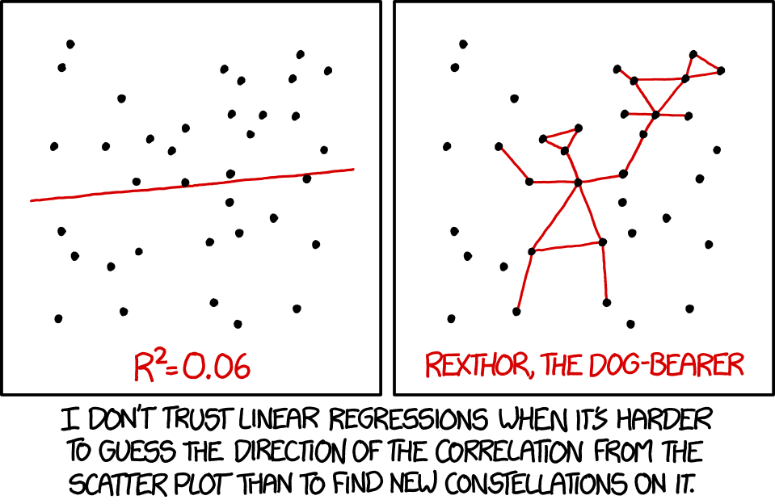
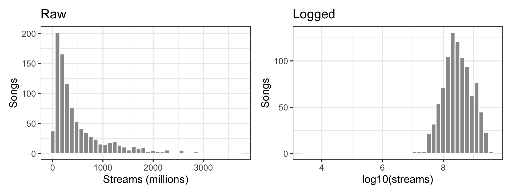
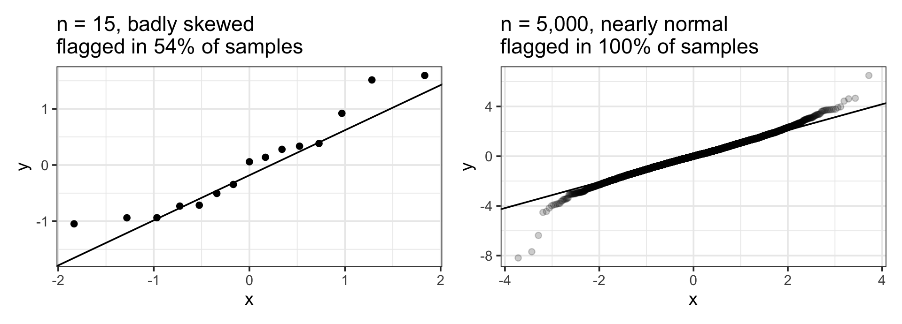
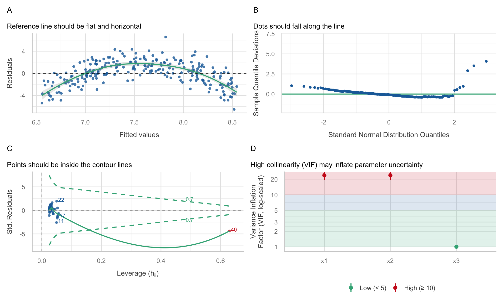

Week 10: Assumptions + Diagnostics
Date: October 29, 2026
Today…
Is the model telling the truth?

Today…
Is the model telling the truth?
- What a regression actually assumes, in order of how much it matters
- Reading
check_model()one panel at a time - A model with a great R² that breaks every rule, and the one-line fix
- Influential points, multicollinearity, and the assumption no plot can check
- Why the formal tests answer the wrong question
- What to do, and how to write it up
Four weeks of glancing
In Week 7 we ended with this:
That is the entire diagnostic toolkit for now: plot the residuals, look for a pattern.
Since then, every model has come with “nothing obviously wrong.” Today each glance gets:
- A name: which assumption it checks
- A consequence: what breaks if it fails
- A fix: what to do about it
Part 1: What a Regression Assumes
The model makes promises about the errors
\[ Y_i = b_0 + b_1X_{1i} + b_2X_{2i} + e_i \qquad e_i \sim N(0,\ \sigma) \]
Read that last part out loud: the errors are…
- centered on zero at every value of X → the line is the right shape
- drawn independently for each person
- spread by the same \(\sigma\) for everyone
- Normally distributed
Almost every assumption is a claim about \(e\), the residuals. Very few are about your variables.
In order of importance (ROS, Ch. 11)
Gelman, Hill & Vehtari list the assumptions from most to least important:
- Validity: the data measure what your question is about
- Representativeness: the sample stands in for the population you care about
- Linearity and additivity: the outcome is a straight-line, added-up function of the predictors
- Independence of errors
- Equal variance of errors
- Normality of errors
Important
The one people test most often (normality) is the one that matters least. The two that matter most (validity, representativeness) cannot be checked with any plot. They are checked by thinking about your design (Week 4).
⚠️ Residuals, not variables
The most common mistake in a Methods section:
“Shapiro-Wilk tests indicated that anxiety was not normally distributed, so…”
Regression does not assume your predictors or your outcome are normal.
- A skewed predictor is fine
- A dummy-coded group (0/1) is about as non-normal as it gets, and we have used one every week since Week 6
- What matters is the shape of the leftovers after the model has done its work
Run diagnostics on the model, not on the raw columns.
What actually breaks
| If this fails… | The coefficients (\(b\)) | The SEs, CIs, p-values |
|---|---|---|
| Linearity | Wrong. Wrong-shaped line | Wrong too |
| Independence | Usually fine | Too small. Overconfident |
| Equal variance | Fine | Off. Too big or too small |
| Normality | Fine | Fine in big samples |
| One influential point | Driven by one case | Off |
Two more problems that are not assumptions, but still show up in check_model():
- Multicollinearity: coefficients become unstable and SEs inflate
- Influential observations: one case is running the model
Part 2: Reading check_model()
A model we already know 😴
Week 7: the ASAP study, 400 adolescents. Depression predicted from sleep duration and peer stress.
# A tibble: 3 × 5
term estimate std.error statistic p.value
<chr> <dbl> <dbl> <dbl> <dbl>
1 (Intercept) 13.0 1.14 11.5 1.74e-26
2 T1_SleepDur -0.504 0.103 -4.89 1.47e- 6
3 T1_PeerStress 0.201 0.0585 3.43 6.57e- 4We interpreted these coefficients three weeks ago. Were we allowed to?
One function, six panels
Each panel answers one question. Let’s take them one at a time.
1. Posterior predictive check
Question: If the model were true, would it produce data that look like ours?
- Green = the real outcome. Blue = outcomes simulated from the fitted model.
- Good: green sits inside the blue
- Bad: green has a peak, skew, or floor the blue lines miss
Here: close. Depression scores are a little more peaked than the model expects, but nothing alarming.
2. Linearity
Question: Is the straight line the right shape?
- Residuals against fitted values (the Week 7 plot)
- Good: the green line is flat at zero
- Bad: a curve. The model is too low at the ends and too high in the middle, or the reverse
Here: flat. ✅
3. Homogeneity of variance
Question: Is the model equally wrong for everyone?
- \(\sqrt{|\text{standardized residual}|}\) against fitted values
- Good: flat green line, even band
- Bad: a line that clearly rises or falls (the funnel from Week 7)
Here: a gentle downward drift. The model misses a little less for kids with high predicted depression. Hold that thought.
The test disagrees with your eyes
Warning: Heteroscedasticity (non-constant error variance) detected (p = 0.016).The plot says “slight.” The test says “significant.” With 400 people, the test can detect a slight tilt. Whether that tilt matters is a separate question.
4. Influential observations
Question: Is any single person running the model?
- Leverage (how unusual someone’s predictors are) against residual (how badly the model misses them)
- Good: every point inside the dashed contours
- Bad: a labeled point outside them. That case has a large Cook’s distance
Here: nobody close. ✅
5. Normality of residuals
Question: Are the leftovers roughly bell-shaped?
- A Q-Q plot, “detrended” so a perfect fit is a flat line
- Good: dots hug the line, maybe wandering a little at the very ends
- Bad: an S-shape (skew) or tails that peel away (outliers, heavy tails)
Here: fine. ✅ And with n = 400, the Central Limit Theorem covers a lot of sins here.
6. Collinearity
Question: Are the predictors stepping on each other? (Week 8)
- VIF = variance inflation factor. 1 = no overlap at all
- Rough guide: < 5 fine, 5–10 worth a look, > 10 a problem
Here: VIF = 1.02. Sleep and peer stress barely overlap (r = −.13). ✅
Verdict on fit_two
| Panel | Verdict |
|---|---|
| PP check | ✅ Close enough |
| Linearity | ✅ Flat |
| Equal variance | ⚠️ Slight drift; robust SEs barely differ |
| Influence | ✅ Nobody outside the contours |
| Normality | ✅ Fine |
| Collinearity | ✅ VIF ≈ 1 |
Week 7’s interpretation stands. Most of the time, this is what diagnostics look like. You check, the model is fine, you write one sentence saying so, and you move on.
💻 Your Turn - Parts A & B
Tip
Week 10 Exercises · ~25 min · Pairs
Last week’s Part C, finished properly. Pick a seed, write it on the board, render. Then run check_model() on your interaction model and go panel by panel.
Bring last week’s week9_reproducibility.qmd. If you don’t have it, the activity has a catch-up chunk.
Part 3: A Model That Breaks
Remember this? 🎵 🎧
Week 7 activity: 952 popular Spotify songs. Four audio features explained about 1% of streams. Playlists explained 62%.
spotify <- import(here("files", "data", "popular_spotify.csv")) %>%
janitor::clean_names() %>%
mutate(streams = as.numeric(streams),
streams_m = streams / 1e6, # millions of streams
playlists_k = in_spotify_playlists / 1000) # thousands of playlists
fit_raw <- lm(streams_m ~ playlists_k, data = spotify)
glance(fit_raw) %>% select(r.squared, sigma, nobs)# A tibble: 1 × 3
r.squared sigma nobs
<dbl> <dbl> <int>
1 0.624 348. 952A great model by psychology standards. Let’s look at it.
Every panel is unhappy
Reading the damage
- PP check: real streams pile up near zero with a long right tail; the model expects a symmetric bell and predicts negative streams
- Linearity: a clear arch. Too low in the middle, way too high at the top
- Homogeneity: the funnel. Small misses for small songs; misses of 1,000M+ for the biggest ones
- Influence: one song (case 757) outside the contour
- Normality: an S-curve, the signature of skew
An R² of .62 told us none of this.
Why: streams grow by multiplying, not adding
Code
p1 <- spotify %>%
ggplot(aes(x = streams_m)) +
geom_histogram(bins = 40, fill = "grey60", color = "white") +
labs(x = "Streams (millions)", y = "Songs", title = "Raw") +
theme_bw(base_size = 15)
p2 <- spotify %>%
ggplot(aes(x = log10(streams))) +
geom_histogram(bins = 40, fill = "grey60", color = "white") +
labs(x = "log10(streams)", y = "Songs", title = "Logged") +
theme_bw(base_size = 15)
p1 + p2
A song going from 1M to 2M streams is the same kind of change as 500M to 1,000M: it doubled. Counts like this (streams, income, reaction times, followers, reported drinks) usually behave better on a log scale.
Log both sides
Both streams and playlists are skewed counts, so log both.
# A tibble: 2 × 5
term estimate std.error statistic p.value
<chr> <dbl> <dbl> <dbl> <dbl>
1 (Intercept) 6.20 0.0586 106. 0
2 log_playlists 0.678 0.0172 39.3 1.73e-201Same data, different story
Flat lines, an even band, a bell-shaped PP check, nobody near the contours. Except one point. We’ll get to it.
Same R². Better model.
# A tibble: 2 × 3
model r.squared adj.r.squared
<chr> <dbl> <dbl>
1 raw 0.624 0.623
2 logged 0.619 0.619The fit did not improve. It went from .624 to .619.
Note
Diagnostics are not about squeezing out more R². They are about whether the coefficients, SEs, and p-values you report mean what you say they mean. The raw model was confidently wrong about the songs that matter most; the logged one is not.
Reading a log–log slope
log_playlists
0.6775028 log_playlists
4.758859 - Ten times the playlists → about 4.8 times the streams
- Roughly: 1% more playlists → about 0.68% more streams
- Streams grow slower than playlists (slope < 1). Being on 10x the playlists does not get you 10x the listening
That sentence was impossible to say from the raw model, which claimed every 1,000 playlists added a flat 57 million streams to every song.
The log exposed something 🔍
That lone point in the logged model:
# A tibble: 3 × 4
track_name streams in_spotify_playlists .std.resid
<chr> <dbl> <int> <dbl>
1 Que Vuelvas 2762 763 -15.4
2 Jhoome Jo Pathaan 1365184 138 -4.95
3 QUEMA 11599388 437 -3.022,762 streams for a song on 763 playlists. A standardized residual of −15: about 52,000 times fewer streams than the model predicts.
- On the raw scale, 2,762 streams (0.003 million) sat next to a few million streams and looked unremarkable
- This is almost certainly a data entry error. The next step is checking the source, not deleting the row
Fixed. The tests still complain.
Drop that song and re-run the formal tests on 951 songs:
Warning: Non-normality of residuals detected (p < .001).Warning: Heteroscedasticity (non-constant error variance) detected (p < .001).The plots look fine. Both tests say “violated.” Who’s right?
⚠️ The tests answer the wrong question
A significance test asks “can I detect any departure at all?” That depends on n, not on whether the departure matters.
Code
set.seed(640)
# Small sample, badly skewed errors
p_small <- replicate(1000, {
x <- rnorm(15); y <- x + (rexp(15) - 1)
shapiro.test(resid(lm(y ~ x)))$p.value
})
# Huge sample, nearly normal errors (t with 10 df)
p_big <- replicate(200, {
x <- rnorm(5000); y <- x + rt(5000, df = 10)
shapiro.test(resid(lm(y ~ x)))$p.value
})
x <- rnorm(15); y <- x + (rexp(15) - 1)
q1 <- tibble(r = resid(lm(y ~ x))) %>%
ggplot(aes(sample = r)) + stat_qq() + stat_qq_line() +
labs(title = paste0("n = 15, badly skewed\nflagged in ",
round(100 * mean(p_small < .05)), "% of samples")) +
theme_bw(base_size = 14)
x <- rnorm(5000); y <- x + rt(5000, df = 10)
q2 <- tibble(r = resid(lm(y ~ x))) %>%
ggplot(aes(sample = r)) + stat_qq(alpha = .2) + stat_qq_line() +
labs(title = paste0("n = 5,000, nearly normal\nflagged in ",
round(100 * mean(p_big < .05)), "% of samples")) +
theme_bw(base_size = 14)
q1 + q2
Small samples: real problems slip through. Large samples: harmless wiggles get flagged. Look at the plots. Use the tests as a second opinion, never as the verdict.
Part 4: Influence, Collinearity, Independence
One song moved the line
Back to the raw model. Case 757 was outside the contour:
# A tibble: 3 × 5
track_name streams_m playlists_k .hat .cooksd
<chr> <dbl> <dbl> <dbl> <dbl>
1 Get Lucky - Radio Edit 934. 52.9 0.0394 0.919
2 Mr. Brightside 1807. 52.0 0.0379 0.312
3 Smells Like Teen Spirit - Remastered 2021 1690. 50.0 0.0348 0.287Get Lucky is on more playlists than any other song in the data (52,898), but has “only” 934M streams.
- Leverage (
.hat): unusual on the predictors. Most playlists of anyone - Residual: far below the line
- Cook’s distance (
.cooksd): leverage × residual. How much every prediction would shift if this one case vanished
Fit it both ways
# A tibble: 2 × 3
`Get Lucky` estimate std.error
<chr> <dbl> <dbl>
1 with 56.7 1.43
2 without 58.6 1.42One song out of 952 moved the slope by about 2 million streams per thousand playlists. Not a disaster here, but in a sample of 40 one case can flip a sign.
What to do with an influential point
- Is it an error? (Like Que Vuelvas.) Check the source. Fix it, or drop it and say so.
- Is it from your population? A 60-year-old in a study of college students: exclude it with a stated rule, ideally decided before you looked.
- Is it real and in scope? Keep it. Fit the model with and without it and report both if the conclusions differ.
- Is the model the problem? Here, the log model had no influential songs at all. Get Lucky only looked extreme on the wrong scale.
Warning
Never delete points to get to p < .05. “Removed outliers” with no rule and no with-and-without comparison is a red flag to every reviewer.
Multicollinearity: three ways to say “popular”
Songs are on playlists on Spotify, Apple, and Deezer. Each one alone predicts streams.
# Correlation Matrix (pearson-method)
Parameter | deezer_playlists | in_apple_playlists | in_spotify_playlists
-----------------------------------------------------------------------------------
streams_m | 0.60*** | 0.77*** | 0.79***
in_spotify_playlists | 0.83*** | 0.71*** |
in_apple_playlists | 0.47*** | |
p-value adjustment method: Holm (1979)Put all three in
# A tibble: 4 × 5
term estimate std.error statistic p.value
<chr> <dbl> <dbl> <dbl> <dbl>
1 (Intercept) 141. 12.8 11.0 1.56e-26
2 in_spotify_playlists 0.0365 0.00288 12.7 4.00e-34
3 in_apple_playlists 2.77 0.168 16.5 1.04e-53
4 deezer_playlists -0.0107 0.0161 -0.666 5.05e- 1Deezer playlists correlate r = .60 with streams on their own. In this model, the Deezer coefficient is negative and not significant.
Deezer didn’t stop mattering. It correlates r = .83 with Spotify playlists, so once Spotify is in the model there is almost nothing left for Deezer to explain, and the model can’t tell the two apart.
VIF says so
# Check for Multicollinearity
Low Correlation
Term VIF adj. VIF
in_apple_playlists 2.18 1.48
deezer_playlists 3.43 1.85
Moderate Correlation
Term VIF adj. VIF
in_spotify_playlists 5.35 2.31- VIF of 5.35 → the Spotify SE is \(\sqrt{5.35}\) = 2.3 times bigger than it would be with no overlap (the
SE_factorcolumn) - Collinearity does not bias coefficients. It blurs them. Wide SEs, unstable signs, coefficients that swing when you add or drop a variable
What to do: ask whether you need all three. Pick the one your question is about, or combine them (e.g., average their z-scores into one “popularity” score). If you only care about prediction, collinearity barely matters.
Remember centering? (Week 9)
Interactions create collinearity: study × tutor is built out of study and tutor.
tutor <- import(here("files", "data", "tutor.csv")) %>%
mutate(tutor_f = factor(tutor, levels = c(0, 1), labels = c("No tutor", "Tutor")),
study_c = study - mean(study))
vif_raw <- check_collinearity(lm(grade ~ study * tutor_f, data = tutor))
vif_cen <- check_collinearity(lm(grade ~ study_c * tutor_f, data = tutor))
tibble(term = c("study", "tutor", "study × tutor"),
uncentered = round(vif_raw$VIF, 2),
centered = round(vif_cen$VIF, 2))# A tibble: 3 × 3
term uncentered centered
<chr> <dbl> <dbl>
1 study 2.7 2.7
2 tutor 7.52 1.36
3 study × tutor 11.4 2.34Same model, same interaction test. Centering took the interaction’s VIF from about 11 down to about 2. A high VIF on an uncentered interaction is not a reason to panic. Center, then check.
Independence: the assumption no plot will show you
ASAP measured each adolescent three times. Stack the three waves and fit one regression:
[1] 1076[1] 400The model thinks it has 1076 independent observations. It has 400 kids.
The same kid misses the same way
# Correlation Matrix (pearson-method)
Parameter | T3 | T2
-----------------------------
T1 | 0.18** | 0.35***
T2 | 0.47*** |
p-value adjustment method: Holm (1979)If the model underpredicts a kid at T2, it probably underpredicts them at T3 too. The errors are not independent, so the SEs are too small and the p-values too optimistic.
Note
check_model() cannot catch this. Independence is a design question: repeated measures, siblings, students in classrooms, therapy clients with the same therapist. The fix is a multilevel model.
💻 Your Turn - Part C
Tip
~10 min · Same pairs, same seed
Does your conclusion hold up? Refit your interaction three ways: robust SEs, dropping cases with Cook’s distance > 4/n, and one version with last week’s TIPI-zeros mistake left in.
Part 5: What To Do About It
The cheat sheet
| Problem | How you see it | What to do |
|---|---|---|
| Nonlinearity | Curved line in Linearity panel | Log or other transform; add a squared term; rethink the model |
| Unequal variance | Rising line / funnel | Log the outcome if it’s a skewed count; robust SEs (vcov = "HC3") |
| Non-normal residuals | S-curve or peeled tails in Q-Q | Large n: usually ignore. Small n: transform, or bootstrap CIs |
| Influential case | Point outside the Cook’s contours | Check for errors; fit with and without; report both |
| Collinearity | VIF > 5–10 | Center interactions; drop or combine overlapping predictors |
| Non-independence | Your design, not a plot | Multilevel model (Week 13) |
What not to do
- ❌ Test normality on the raw outcome instead of the residuals
- ❌ Treat a significant Shapiro-Wilk at n = 900 as an emergency
- ❌ Delete points, transform, or switch models until the result is significant
- ❌ Run diagnostics after you’ve seen the results, only to justify what you already wanted
- ✅ Decide before you see the results what you’ll check and what you’ll do if it fails
That last one is the analysis-plan habit. You will need it for the final project.
The write-up 🎵 🎧
Model assumptions were evaluated with residual diagnostics (
performance::check_model()). In the untransformed model, residuals showed marked curvature, increasing variance with fitted values, and right skew, so both streams and playlist counts were log10-transformed. The transformed model showed no evidence of nonlinearity, heteroscedasticity, or influential observations, with one exception: a single song (2,762 streams) had a standardized residual of −15.4, was judged a data-entry error, and was excluded (N = 951). Each tenfold increase in playlist count was associated with a 4.7-fold increase in streams, b = 0.67, 95% CI [0.64, 0.70], R² = .68.
Tip
Say what you checked, what you found, what you did, and why. If everything looked fine, one sentence is enough: “Residual diagnostics showed no evidence of nonlinearity, heteroscedasticity, non-normality, or influential observations.”
💻 Your Turn - Parts D & E
Tip
~15 min · Write, render, tally
- Write your Results paragraph: the interaction, one assumption sentence, one robustness sentence
- Restart R and render. Do your numbers still match your paragraph?
- Put your seed’s four p-values on the board - maybe
The tally, 1,000 times over
The same analysis on 1,000 different seeds, instead of the 15 on the board:
| Version | Seeds with p < .05 |
|---|---|
| Original | 21.6% |
| Robust SEs | 26.7% |
| Drop Cook’s > 4/n | 19.7% |
| TIPI zeros left in (the mistake) | 23.1% |
- In 20.6% of samples, a defensible robustness check (robust SEs or trimming) flipped the conclusion
- 32.9% of samples are significant under at least one of the three versions above. Only 12.3% under all three
- The heteroscedasticity test flagged only 13% of samples, even though the outcome is a bounded sum score that produces the arch you saw
And in the full data…
All 33,982 usable responses:
- Interaction b = 0.039, p ≈ 4 × 10⁻³⁸
- ΔR² = .003
The interaction is real and tiny. With n ≈ 340, about one sample in five can see it, and which version of the analysis you run decides a fifth of the verdicts.
Reproducible (it renders) is not robust (it survives other defensible choices), and neither is replicable (a new sample agrees). Diagnostics tell you which choices to check. Reporting them lets the next person check you.
💻 Your Turn: Name that violation (if time)
Tip
~10 min · Pairs
Each panel comes from a different model. For each one: which assumption, what’s wrong, what would you do?
Code
set.seed(1029)
n <- 250
x <- runif(n, 1, 10)
mA <- lm(y ~ x, data = tibble(x, y = 2 + 3 * x - 0.3 * x^2 + rnorm(n, 0, 1.5)))
mB <- lm(y ~ x, data = tibble(x, y = exp(0.3 * x + rnorm(n, 0, 0.45))))
dC <- tibble(x = c(x[1:39], 25), y = c(2 + 0.5 * x[1:39] + rnorm(39, 0, 1.5), -4))
mC <- lm(y ~ x, data = dC)
x1 <- rnorm(n); x2 <- x1 + rnorm(n, 0, 0.2); x3 <- rnorm(n)
mD <- lm(y ~ x1 + x2 + x3, data = tibble(x1, x2, x3, y = x1 + x3 + rnorm(n)))
pA <- plot(check_model(mA, check = "linearity", panel = FALSE))[[1]] + labs(title = "A")
pB <- plot(check_model(mB, check = "qq", panel = FALSE))[[1]] + labs(title = "B")
pC <- plot(check_model(mC, check = "outliers", panel = FALSE))[[1]] + labs(title = "C")
pD <- plot(check_model(mD, check = "vif", panel = FALSE))[[1]] + labs(title = "D")
(pA + pB) / (pC + pD)
Answers
- A — Linearity. The residual line is an arch: the true relationship bends. Add a squared term or transform
x, then re-check. - B — Normality (and probably variance). Right-skewed residuals from an outcome that grows multiplicatively. Log the outcome, like streams.
- C — Influence. One case with an extreme
xand a big miss, outside the Cook’s contour, in a sample of only 40. Check it, then fit with and without. - D — Collinearity.
x1andx2are near copies (VIF way above 10). Keep the one your question is about, or combine them.
Notice what’s not on this slide: independence. No panel would have shown it.
✍️ Wrap-Up
Finish these in your notes:
- Name one assumption that no plot can check, and how you’d check it instead.
- The raw and logged Spotify models had the same R². Why was the logged one better?
- Your residuals fail a Shapiro-Wilk test with n = 800 but the Q-Q plot looks fine. What do you write?
- One thing that is still muddy → journal.
For next time
📋 Lab 9 — Groups, Slopes & Interactions, due Tuesday 11/3 at 11:59pm
📖 Readings for Missing Data + Model Building/Comparison:
- Chapter 15.10 — LSR
- Chapter 17 — ST
- Chapters 17.3–17.7 — ROS
- Chapter 8.7 — MSR
💾 Class Check next week
📂 Final Project — posted Friday
The final project will be up on the website Friday. It uses everything from today: you’ll write an assumption-check plan before you run your confirmatory model. Read it over the weekend.